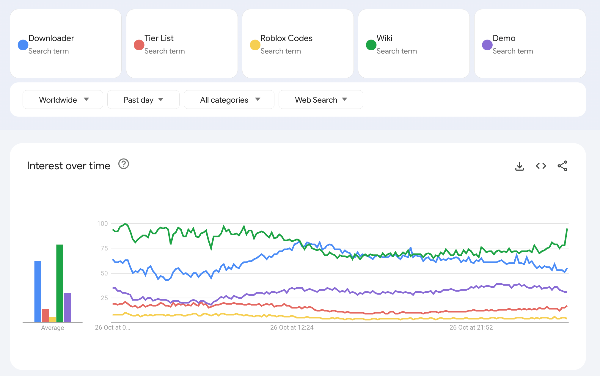
2026 年 10 月 27 日，第一次日课。
今天打开 Google Trends，先扫几个常见词根，碰到有意思的词，就往下看曲线、地区和 SERP，再到 Ahrefs 里查一下。前后大约 38 分钟。
先看这几个词根：Downloader、Tier List、Roblox Codes、Wiki、Demo。
01. Downloader：从 Slideshare 看到 Firefox 扩展
Downloader 里暂时没什么想法，不过 Slideshare 看起来有点意思，去看看。
相关搜索里有 slideshare ppt downloader、slideshare downloader，还有一个更具体的词：scribd downloader extension firefox。
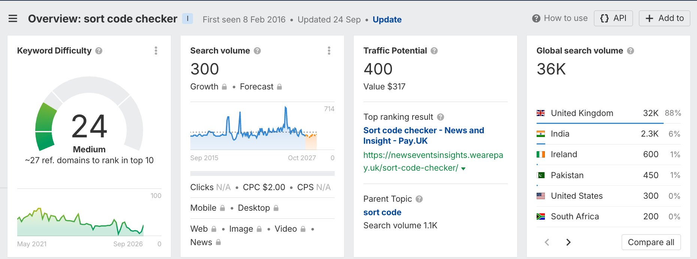
先点开 slideshare downloader，把时间拉到三个月，和 gpts 放在一起比较。不算是新词，看起来是第三世界国家的长期需求。
再看 Scribd 的 Firefox 扩展词，这个倒是有点意思，是一个爆发需求。三个月的曲线前面只有几个零散尖峰，后面开始出现连续的热度。
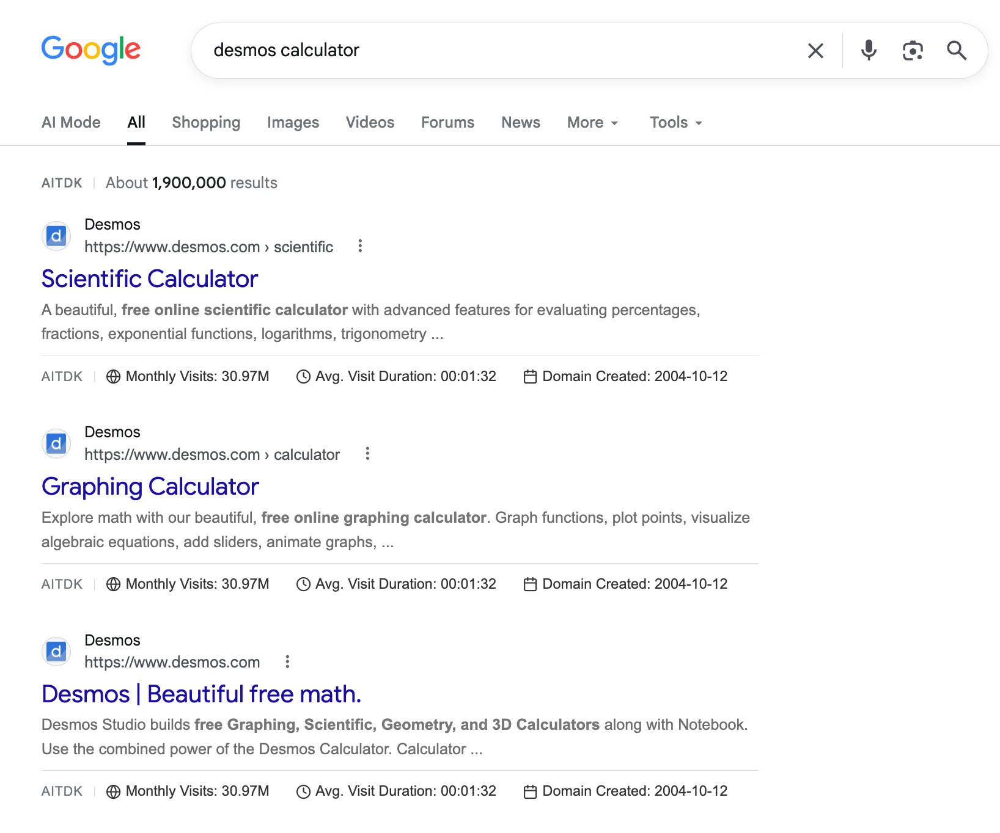
不过再看地区分布，排在前面的是印尼、埃塞俄比亚、马来西亚，还是分布国家的问题。
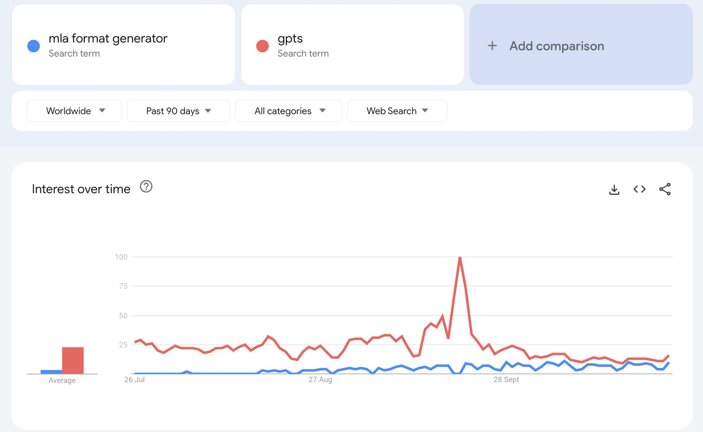
又切到过去七天，和 gpts 放在同一张图里比较，看起来就不太行了。
02. Tier List：Azeroth Survivors 看起来不错，域名却没了
接着看 Tier List。在相关搜索里看到了 azeroth survivors tier list，点进去看过去 30 天的趋势，比较不错，比较新的爆发。
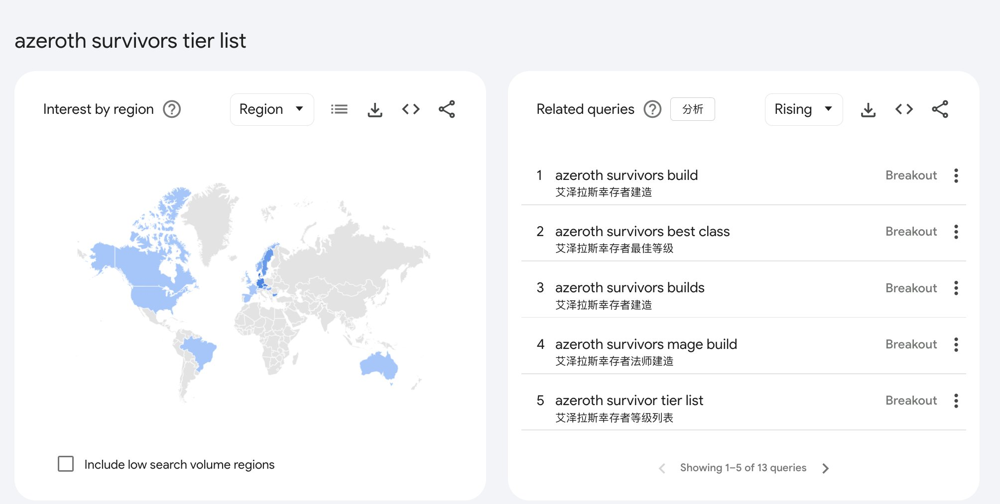
地区列表里有丹麦、捷克、德国、保加利亚、瑞典，国家看起来也好。再和 gpts 比一下，也是有一些量。
往下看相关搜索，除了 Tier List，还有 Build、Best Class、Mage Build。这已经不只是一个榜单词了，整体看起来也有很多额外需求，我们看下主词。
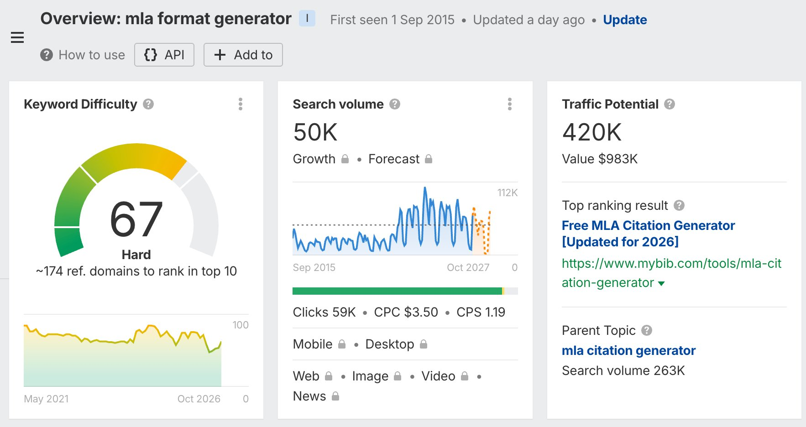
拿 azeroth survivors 和 pdf to img 放在一起，过去 30 天的图里，主词末段的增长很明显。主词是新词而且大热。
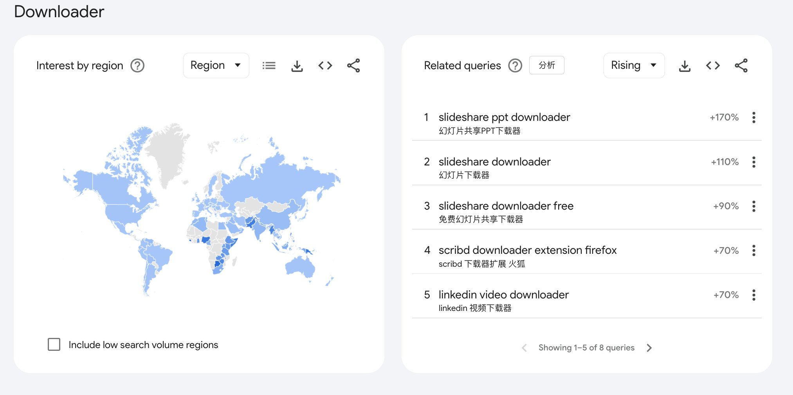
顺手查了一下域名，azerothsurvivors.com 已经被注册了。看起来被人捷足先登了，可惜。再试 azeroth-survivors.wiki，也是已注册。
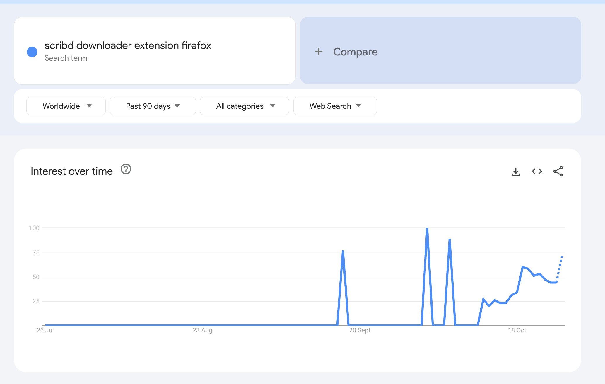
连字符的都没有了，按照我们的习惯这个就是不做了。
03. Generator：MLA 的需求不小，但看起来很难打
看完这一组，换成 Generator、Codes、Calculator、Checker、Converter，是很标准的一组词根。
Generator 的相关搜索里出现了 mla format 和 mla format generator。感觉 MLA 可以看下，可能有新需求。拉到三个月再看，不算是新需求，但是看起来在抬头的样子。
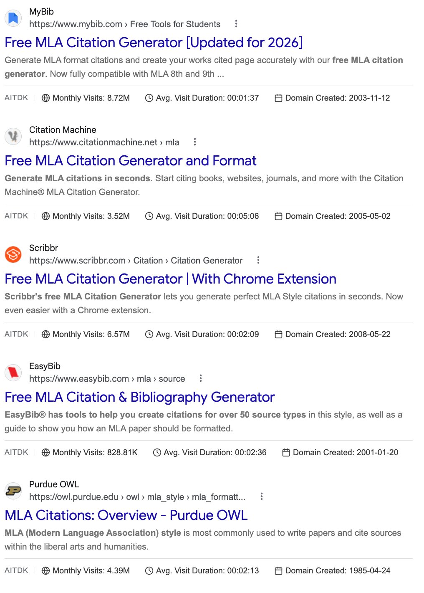
感觉有些意思，看下 SERP。
从搜索结果看到关键词数据
搜 mla format generator，前面有 MyBib、Citation Machine、Scribbr、EasyBib，还有 Purdue OWL。基本都是老词内页，不过 BibGuru 在拿首页打。
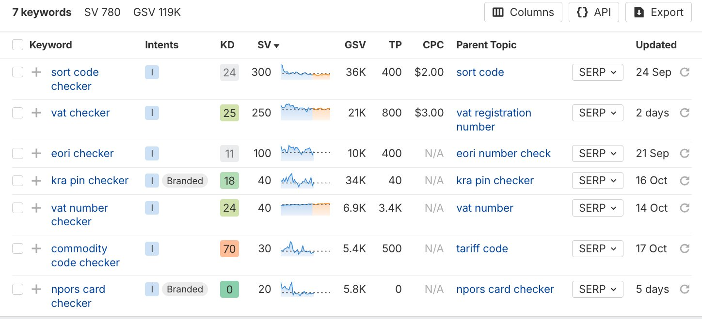
再往第二页翻，又找到了 ChatGPT 专门的内页，看起来这个词不太容易打。
顺手问了一下 ChatGPT，理解下来，用户可能是在生成 MLA 引用，也可能想把整篇论文按 MLA 格式排好。可能是一个工具站的稳定需求。
然后到 Ahrefs 里查，选的是美国数据库：月搜索量 50K，KD 67，CPC 3.5 美金。
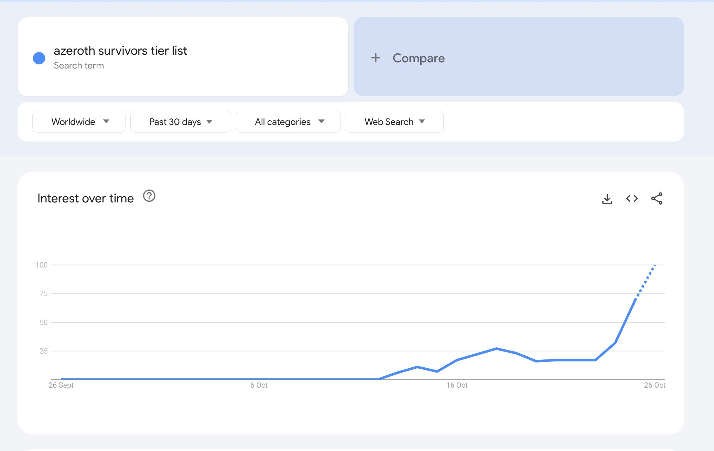
67 KD，果然很难。前面也确实没看到什么新站，而且 CPC 3.5 美金，属于很好的词了。
再看看几个独立站混得怎么样
接着查下 ChatGPT 给的这几个网站，看看混得怎么样：
mlaformatgenerators.com：Ahrefs 自然搜索流量估算为 0。
mla-format-generator.com：68。
mla-formatter.com：82。
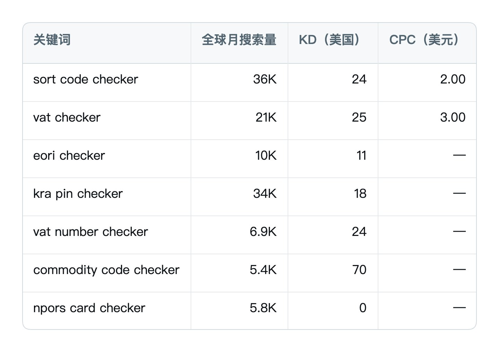
这几个看起来混得都不太行。
再回到 Google Trends，翻 Generator 的相关搜索，又看到了 mla format、mla citation generator、work cited generator、citation generator、chicago citation generator。
看见了多种类似的表达方法和形式，MLA 这个词群今天在爆发。于是又搜了 chicago citation generator，不过无一例外的是前排都没什么新站，显然很难。
04. Calculator：一组 Desmos 的品牌词
继续看 Calculator。这里也有一个词群在爆发，主词是 Desmos，相关的表达有 desmos calculator、desmos graphing calculator、desmos graphing。
搜了一下 desmos calculator，截图最前面的三条都是 Desmos 自己的页面：科学计算器、图形计算器和首页。
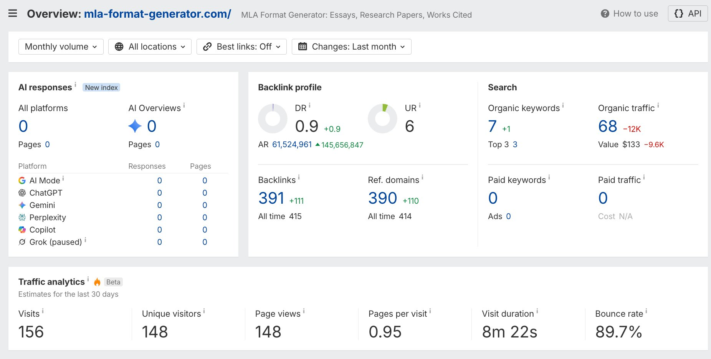
不过看起来是品牌词，而且很大。这个和泛用的 Calculator 需求不太一样，用户已经知道自己在找 Desmos 了。
05. Checker：几个词放在一起，英国的需求冒了出来
最后看 Checker，感觉今天刷出来的机会都比较有意思。相关搜索里有 commodity code checker、kra pin checker、vat number checker、eori checker、vat checker，不像前面的计算器、生成器那么熟悉。
组团查一下。把七个词一起放到 Ahrefs 里，感觉确实出来了一些有意思的机会，KD 在 30 以下的都是可以试试的。
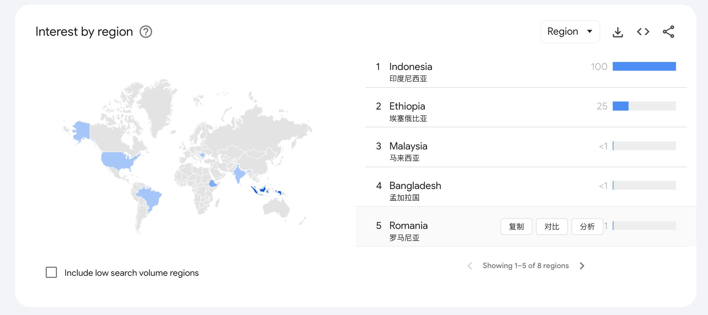
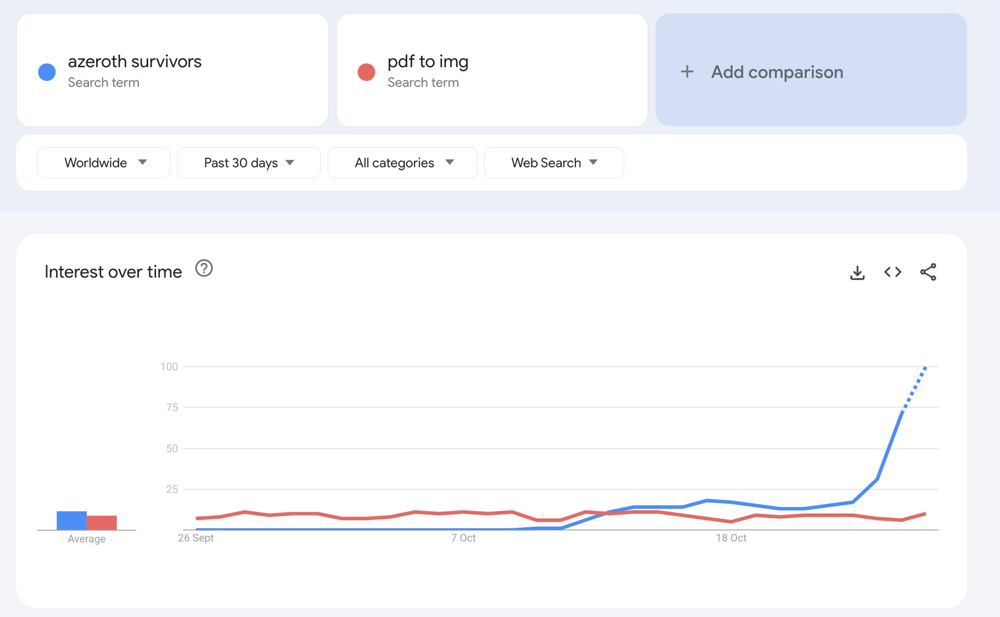
这是当天保存的 Ahrefs 数据。当时选的是美国数据库，全球量单列；— 表示 N/A，不是 0。
七个词的美国月搜索量合计只有 780，界面显示的全球合计却有约 119K。很多需求并不在美国，于是先点开 sort code checker，看看它的地区分布。
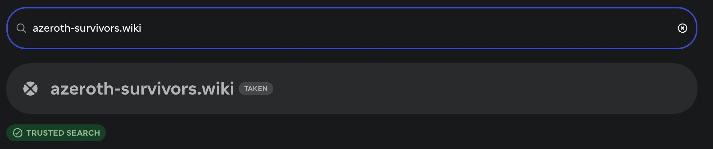
这个词在英国量不小的。全球月搜索量 36K，其中英国 32K，占了 88%；美国只有 300。
再查这个词是干什么的，原来 Sort Code 是英国银行体系里的六位银行识别代码。用户查的是银行信息，以及这个代码是否支持某些支付方式。
是一个金融体系里的词，可能涉及 YMYL，不过也解释了 CPC 为什么还可以。
再看具体工具，Pay.UK 自己就有 Sort Code Checker。做到这一步，感觉不只是写个输入框，还涉及数据和官方工具的竞争。
这种有点难做，需要数据库，并且涉及官方竞争，而且 YMYL，不过算是个有意思的机会。